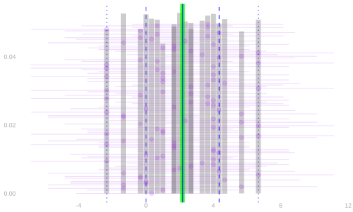

20 Randomized Experiments
$$ \newcommand{X}{} \newcommand{Y}{}
$$
A Classroom Experiment
The Quiz
The Reveal
Last week’s homework included a problem very similar to this one. Some of you had access to a hint; some of you didn’t. We randomized who got the hint key.
Let’s see what happened. Write your quiz score on a slip of paper with your name.
Is this a real effect, or just noise? Did the hint help, hurt, or do nothing?
Unlike the simulations we’ve been running, we can’t answer this by repeating the experiment 10,000 times and looking at the sampling distribution. You can only do the homework for the first time once. This is the situation researchers are usually in: you run the experiment, you get one estimate, and you need theory to tell you what it means.
To answer these questions, we need to think carefully about what we’re trying to estimate and why randomization helps us estimate it.
Potential Outcomes
Your Potential Outcomes
Let’s think about this experiment more carefully. Each of you has two potential outcomes:
- \(y_j(1)\) is the quiz score student \(j\) would get if they had access to the hint
- \(y_j(0)\) is the quiz score student \(j\) would get if they didn’t have access to the hint
These are fixed numbers—characteristics of each student. The treatment effect for student \(j\) is the difference: \[\tau_j = y_j(1) - y_j(0).\]
This is how much the hint helps (or hurts) that particular student.
The Fundamental Problem
Here’s the catch: you can’t see both potential outcomes for any student. If you got the hint, we observe \(y_j(1)\). If you didn’t, we observe \(y_j(0)\). We never observe \(\tau_j = y_j(1) - y_j(0)\) for anyone.
This is called the fundamental problem of causal inference. We want to know causal effects—comparisons of what would happen under different treatments—but each person only takes one treatment.
What We Want vs. What We Can Calculate
What we want: the average treatment effect in our population (the class). \[\bar\tau = \frac{1}{m}\sum_{j=1}^m \tau_j = \frac{1}{m}\sum_{j=1}^m \{y_j(1) - y_j(0)\}\]
What we can calculate: a comparison of observed outcomes for the two groups. \[\hat\tau = \frac{1}{m_1}\sum_{j:w_j=1} y_j(w_j) - \frac{1}{m_0}\sum_{j:w_j=0} y_j(w_j)\] where \(w_j \in \{0,1\}\) is the treatment student \(j\) actually received and \(m_w = \sum_j 1_{=w}(w_j)\) is the number of students who received treatment \(w\).
Is \(\hat\tau\) a good estimate of \(\bar\tau\)? That depends on how we assigned treatments.
Why Randomization Works
The Setup
We have a population of \(m\) individuals. Each has potential outcomes \(y_j(0)\) and \(y_j(1)\). We assign treatments \(W_1 \ldots W_m\) by randomization—say, by flipping a coin for each person: \[W_j = \begin{cases} 1 & \text{with probability } 1/2 \\ 0 & \text{with probability } 1/2 \end{cases}\] with flips independent across people.
The realized outcome for person \(j\) is \[Y_j = y_j(W_j) = \begin{cases} y_j(1) & \text{if } W_j = 1 \\ y_j(0) & \text{if } W_j = 0. \end{cases}\]
Our estimator is \[\hat\tau = \hat\mu(1) - \hat\mu(0) = \frac{1}{M_1}\sum_{j:W_j=1} Y_j - \frac{1}{M_0}\sum_{j:W_j=0} Y_j\] where \(M_w = \sum_{j=1}^m 1_{=w}(W_j)\) is the (random) number of people assigned to treatment \(w\).
A Tiny Example
| \(j\) | \(y_j(1)\) | \(y_j(0)\) | \(\tau_j\) |
|---|---|---|---|
| 1 | 6 | 2 | 4 |
| 2 | 0 | 0 | 0 |
| 3 | 4 | 1 | 3 |
| 4 | 7 | 7 | 0 |
| 5 | 8 | 4 | 4 |
| 6 | 2 | 0 | 2 |
The average treatment effect is \[\bar\tau = \frac{1}{6}\sum_{j=1}^6 \tau_j = \frac{13}{6} = 2.17.\]
But we can’t calculate this—we don’t observe both potential outcomes for anyone.
Visualizing Randomization



Population. Each person has two potential outcomes: a control outcome (red) and a treatment outcome (green). The connected dots show these pairs. We observe the entire population—no sampling.
Randomization variability
Randomize 1. We flip coins to assign treatment. ✗ marks unrealized potential outcomes. This assignment gives estimate \(\hat\tau = 3.67\).
Randomize 2. Flip again. Different people get treated. Now \(\hat\tau = 0\).
Randomize 3. And again. Same population, different treatment assignments, different estimates. \(\hat\tau = 0.67\). The true effect is \(\bar\tau = 2.17\).
The only source of randomness here is treatment assignment. We observe everyone in the population—there’s no sampling. Each randomization gives a different estimate because different people end up in each group.
If we repeat this randomization many times, we get a distribution of estimates. The green line marks the true average treatment effect \(\bar\tau\). The blue line marks the mean of our estimates. They coincide—our estimator is unbiased.

Proving Unbiasedness
We’ll show that \(\mathop{\mathrm{E}}[\hat\mu(w)] = \bar\mu(w)\) where \(\bar\mu(w) = \frac{1}{m}\sum_{j=1}^m y_j(w)\) is the population mean of potential outcomes under treatment \(w\). It follows that \(\mathop{\mathrm{E}}[\hat\tau] = \bar\mu(1) - \bar\mu(0) = \bar\tau\).
\[ \begin{aligned} \hat\mu(w) &= \frac{1}{M_w}\sum_{j:W_j=w} Y_j \\ &= \frac{1}{M_w}\sum_{j=1}^m Y_j \cdot 1_{=w}(W_j) \\ &= \frac{1}{M_w}\sum_{j=1}^m y_j(W_j) \cdot 1_{=w}(W_j) \\ &= \frac{1}{M_w}\sum_{j=1}^m y_j(w) \cdot 1_{=w}(W_j). && \text{indicator trick} \end{aligned} \]
Now take expectations. We condition on \(M_w\) (the number assigned to treatment \(w\)) and use the fact that, given \(M_w\), each person has conditional probability \(M_w/m\) of being in the treatment-\(w\) group:
\[ \begin{aligned} \mathop{\mathrm{E}}[\hat\mu(w)] &= \mathop{\mathrm{E}}\qty[\frac{1}{M_w}\sum_{j=1}^m y_j(w) \cdot 1_{=w}(W_j)] \\ &= \mathop{\mathrm{E}}\qty[\mathop{\mathrm{E}}\qty[\frac{1}{M_w}\sum_{j=1}^m y_j(w) \cdot 1_{=w}(W_j) \mid M_w]] \\ &= \mathop{\mathrm{E}}\qty[\frac{1}{M_w}\sum_{j=1}^m y_j(w) \cdot \mathop{\mathrm{E}}[1_{=w}(W_j) \mid M_w]] \\ &= \mathop{\mathrm{E}}\qty[\frac{1}{M_w}\sum_{j=1}^m y_j(w) \cdot \frac{M_w}{m}] \\ &= \frac{1}{m}\sum_{j=1}^m y_j(w) = \bar\mu(w). \end{aligned} \]
So the group means are unbiased for the potential outcome means, and therefore \(\hat\tau\) is unbiased for \(\bar\tau\).
What Made This Work?
Two things:
The indicator trick: \(y_j(W_j) \cdot 1_{=w}(W_j) = y_j(w) \cdot 1_{=w}(W_j)\). This lets us pull the fixed potential outcomes \(y_j(w)\) out of the randomness.
Randomization: Each person has equal probability of assignment to treatment \(w\), regardless of their potential outcomes. This is what makes \(\mathop{\mathrm{E}}[1_{=w}(W_j) \mid M_w] = M_w/m\) the same for everyone.
If we’d assigned treatment based on something related to outcomes—say, giving hints to students who seemed to be struggling—this wouldn’t work.
Connection to Lecture 6
In Lecture 6, we compared two groups: Black vs non-Black voters, degree vs no degree. Those were pre-existing groups. We sampled from a population and calculated subsample means.
Here, the groups don’t exist until we create them by randomization. There’s no sampling—we observe the entire population (the class). The only randomness is the treatment assignment.
This is the simplest causal inference setup. Next, we’ll see what happens when we combine randomization with sampling.
The Potential Outcomes Formalism
Now that we’ve seen the basic idea with our classroom experiment, let’s develop the formalism more carefully using a different example.
A Donation Example
Suppose we’re running a fundraising campaign. We have a list of potential donors and we’re deciding whether to contact each one by email or by phone call. Calling is more expensive, so we want to know: does calling actually raise more money?

| \(j\) | \(x_j\) | \(y_j(1)\) | \(y_j(0)\) | \(\tau_j\) |
|---|---|---|---|---|
| 1 | 55 | 6 | 2 | 4 |
| 2 | 55 | 0 | 0 | 0 |
| 3 | 55 | 4 | 1 | 3 |
| 4 | 75 | 7 | 7 | 0 |
| 5 | 75 | 8 | 4 | 4 |
| 6 | 75 | 2 | 0 | 2 |
To reason about cause and effect formally, we use potential outcomes.
- \(\textcolor[RGB]{248,118,109}{y_j(0)}\) is the amount person \(j\) would donate if they were emailed.
- \(\textcolor[RGB]{0,191,196}{y_j(1)}\) is the amount person \(j\) would donate if they were called.
We call the actions we can take treatments. Each individual in our population has a potential outcome for each treatment. In this case, we have two treatments and therefore two potential outcomes—a pair—for each individual. Each individual’s potential outcomes are drawn as a connected pair of dots, one red and one green.
Treatment effects are estimation targets that involve comparisons of potential outcomes. For example, how much higher would our average donation be if we called everyone vs. if we emailed everyone? In terms of potential outcomes, we’d write that out like this.
\[ \text{target} = \textcolor[RGB]{0,191,196}{\frac 1m \sum_{j=1}^m y_j(1)} - \textcolor[RGB]{248,118,109}{\frac 1m \sum_{j=1}^m y_j(0)} = \frac1m \sum_{j=1}^m \tau_j \quad \text{for} \quad \tau_j = y_j(1) - y_j(0). \]
We call the differences \(\tau_j\) individual treatment effects. \(\tau_j\) is the effect of calling (vs. emailing) person \(j\) in our population. We call the average of these individualized effects the average treatment effect.
Potential Outcomes as Functions
It’s convenient to think of each individual’s potential outcomes as one function instead of two values. And the notation only really lets us define that function \(y_j(\cdot)\) one way.
\[ y_j(w) = \begin{cases} y_j(1) & \text{if } w=1 \\ y_j(0) & \text{if } w=0 \end{cases} \] For example, looking at Table 25.1, we see that \[ y_1(w) = \begin{cases} \underset{\textcolor[RGB]{192,192,192}{y_1(1)}}{6} & \text{if } w=1 \\ \underset{\textcolor[RGB]{192,192,192}{y_1(0)}}{2} & \text{if } w=0. \end{cases} \]
That individual’s realized outcome is the value \(y_j(w_j)\) their potential outcome function returns when we plug in the treatment \(w_j\) that they actually receive.
Why Think Like This?
- It works for any number of treatments.
- It’s useful for thinking about random treatments.
- If \(W\) is a random variable taking on \(k\) values, so is \(y_j(W)\).
- The alternative is to write \(1_{=1}(W)y_j(1) + 1_{=0}(W)y_j(0)\) where we’d write \(y_j(W)\).
- Or more generally \(\sum_w 1_{=w}(W)y_j(w)\).
- In function terms, that’s using the indicator trick everywhere instead of just where we need it.
- People do it, but it tends to make things more difficult than they need to be.
Solution
Locked (Week 0)
The Fundamental Problem of Causal Inference

| \(j\) | \(x_j\) | \(y_j(1)\) | \(y_j(0)\) | \(\tau_j\) | \(w_j\) | \(y_j(w_j)\) |
|---|---|---|---|---|---|---|
| 1 | 55 | 6 | 2 | 4 | 1 | 6 |
| 2 | 55 | 0 | 0 | 0 | 0 | 0 |
| 3 | 55 | 4 | 1 | 3 | 1 | 4 |
| 4 | 75 | 7 | 7 | 0 | 0 | 7 |
| 5 | 75 | 8 | 4 | 4 | 1 | 8 |
| 6 | 75 | 2 | 0 | 2 | 0 | 0 |
In concrete terms, you can’t both call and not call someone. You can see what happens when you call someone or what happens when you don’t, but not both. In abstract terms, each individual can take only one treatment,1 so only one of each individual’s potential outcomes is realized. That means that, even if we can choose everyone’s treatment however we want, we can’t calculate anybody’s individual treatment effect \(\tau_j = y_j(1) - y_j(0)\). And we can’t calculate the average of them, \(\bar\tau = \frac1m \sum_{j=1}^m \tau_j\), either.
Solution
Locked (Week 0)
Appendix
Why \(M_w/m\) is the Conditional Probability
When we condition on \(M_w\) (the number of people assigned to treatment \(w\)), why is the conditional probability that person \(j\) gets treatment \(w\) equal to \(M_w/m\)?
The flips are identically distributed, so \(\mathop{\mathrm{E}}[1_{=w}(W_j) \mid M_w]\) must be the same for each \(j\). And they sum to \(M_w\). This lets us write an equation we can solve for the conditional expectation.
\[ \begin{aligned} M_w &= \mathop{\mathrm{E}}[M_w \mid M_w] && \text{a constant equals its own expectation} \\ &= \mathop{\mathrm{E}}\qty[\sum_{j=1}^m 1_{=w}(W_j) \mid M_w] && \text{definition of } M_w \\ &= \sum_{j=1}^m \mathop{\mathrm{E}}[1_{=w}(W_j) \mid M_w] && \text{linearity} \\ &= m \times \mathop{\mathrm{E}}[1_{=w}(W_j) \mid M_w]. && \text{identical distribution} \end{aligned} \]
Solving: \(\mathop{\mathrm{E}}[1_{=w}(W_j) \mid M_w] = M_w / m\).
This is inconsistent with everyday use of the term treatment because you can, e.g., take both ibuprofen and acetaminophen. In potential outcomes language, we’d say that ibuprofen alone, acetaminophen alone, and ibuprofen plus acetaminophen are three different treatments.↩︎